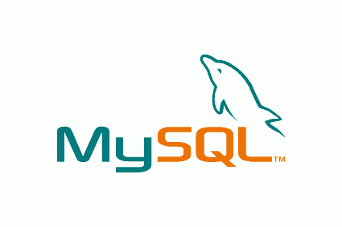
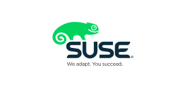

Sofware Libre
Definiciones Basicas
Sofware Libre
La definicion del sofware estipula los criterios que se tienen que cumplir para que un programa sea considerado libre.
De vez en cuando modificamos esta definicion para clarificar o para resolver problemas sobre cuestiones delicadas:
Más abajo en esta página, en la sección Historial, se puede consultar la lista de la modificacion que afecta la definicion de sofware libre.
"Software Libre"es el software que respeta la libertad de los usuarios y la comunidad. En grandes lineas, significa que los usuarios tienen la libertad para ejecutar, copiar, distribuir, estudiar, modificar y mejorar el software.Es decir, el "software libre"es una cuestion de libertad, no de precio. Para enetnder el concepto, piense en "libre"como en"libre expresión",no como en barra libre.
Promovemos estas libertades porque todos merecen tenerlas. con estas libertades, los usuarios(tanto individualmente como en forma colectiva)controlan el programa y lo que este hace. Cuando los usuarios no controlan el programa, decimos que dicho programa no es libre, o que es primativo.Un programa que no es libre controla a los usuarios, y el programador controla el programa, con lo cual el programa resulta ser un instrumento de poder injusto.
Un programa es software libre si los usuarios tienen las cuatro libertades esenciales:
-
L a libertad de ejecutar el programa como se desea, con cualquier propósito (libertad 0)
-
La libertad de estudiar cómo funciona el programa y cambiarlo para que haga lo que usted quiera (libertad 1).El acceso al codigo fuente es una condicón necesaria para ello.
-
La libertad de redistribuir copias para ayudar a su projimo (libertad 2)
-
La libertad de distribuir copias de sus versiones modificadas a terceros (libertad 3). esto le permite ofrecer a toda la comunidad la oportunidad de beneficiarse de las modificaciones. El acceso al código fuente esuna condición necesaria para ello.
La libertad para distribuir (libertades 2 y 3)significa que sted tiene la libertad para redistribuir copias con o sin modificaciones, ya sea gratuitamente o cobrando una tarifa por la distribucion, a cualquiera en cualquier parte. Ser libre de hacer esto significa, entre otras cosas, que no tiene debe que pedir ni pagar ningun permiso para hacerlo
Mascotas del mundo del software libre
| Ñu  |
Un ñu es el animal representativo del proyecto GNU significa "Ñu"en ingles. El nombre GNU no se adapto a la persona que comenzo el proyecto (Richard Stallman) le gustase particularmente este animal sino porque GNU es un acronimo recursivo que quiere decir "GNU's NOT Unix."
|
| Gimp

|
Wilber es la mascota de GIMP (GNU Image manipilation program) fue creada en 1997 por Thomas Knosnabeb y Wilber es un... gimp. A menudo se confunde con un zorro o un ratón pero segú su ccreador, Wilber es simplemente un gimp.
|
Tux

|
La idea de Tux surgió del propio Linus Torvalds, según cuenta, de pequeño le mordio un pingüino en Australia y desde entonces le pareció un animal simpatico. No hay un origen claro del nombre "TUX"; algunos dicen que proviene del inglés Tucedo que significa esmoquin (siempre se ha dicho que los pingüinos van de esmoquín) y otros dicen que el nombre es una mezcla de Torvald con Unix
|
Mono

|
Mono es tanto el nombre como el animal representativo como de un proyecto que pretende se una implementación libre de la plataforma .Net
|
| Perl

|
El camello es la imagen del lenguaje perl desde que apareciesepor primera vez en el libro "Programming Perl". curiosamente, el camello de perl tiene derechos de autor (la editorial O'Reilly)
|
| Mysql

|
El delfín que es parte del logo de MySql se llama Sakila . Segúnlos creadores de MySql este delfín representa los valores de la compañia y de la base de datos: rapidez, precisión, potencia y naturalidad |
Suse

|
Geeko; así se llama el simpático camaleón que es la mascota de la compañía alemana Suse. El nombre fue elegido tras un concurso en el que participaron miles de personas y provienede término Geek
(http://es.wikipedia.org/wiki/Geek)
que se podria traducir al castellano como friki
|
Software libre la comunidad hacia el conocimiento Seguir leyendo
Linux